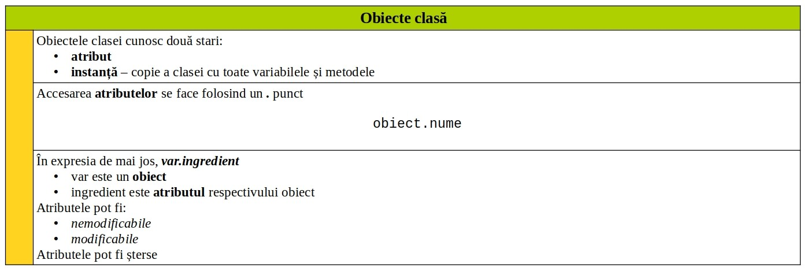
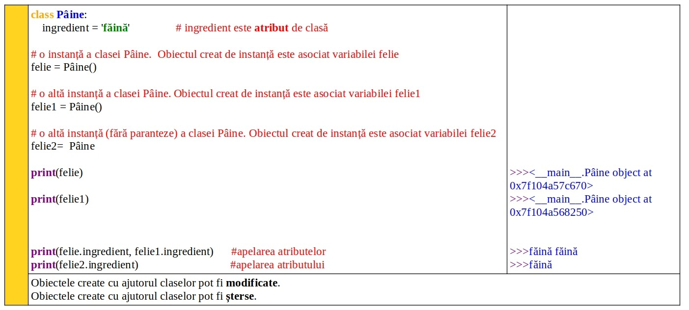
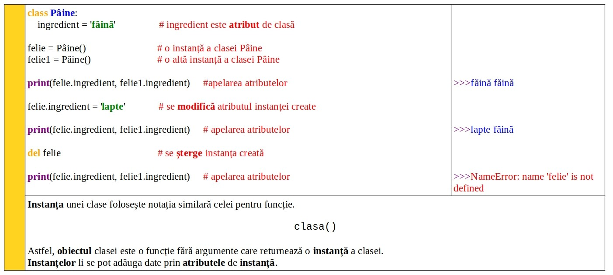
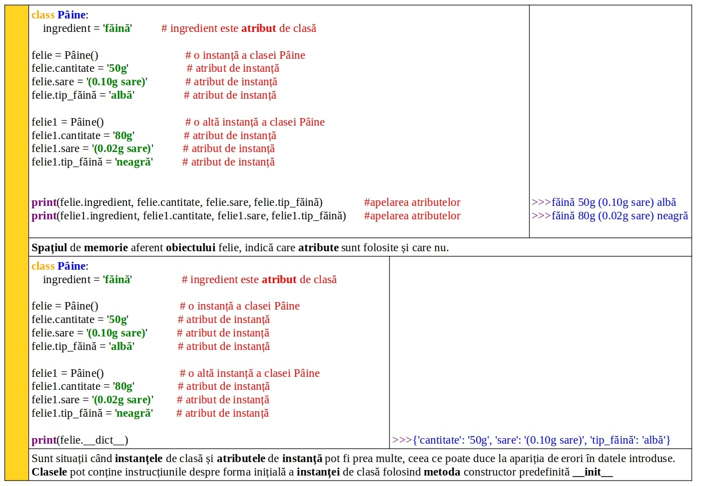
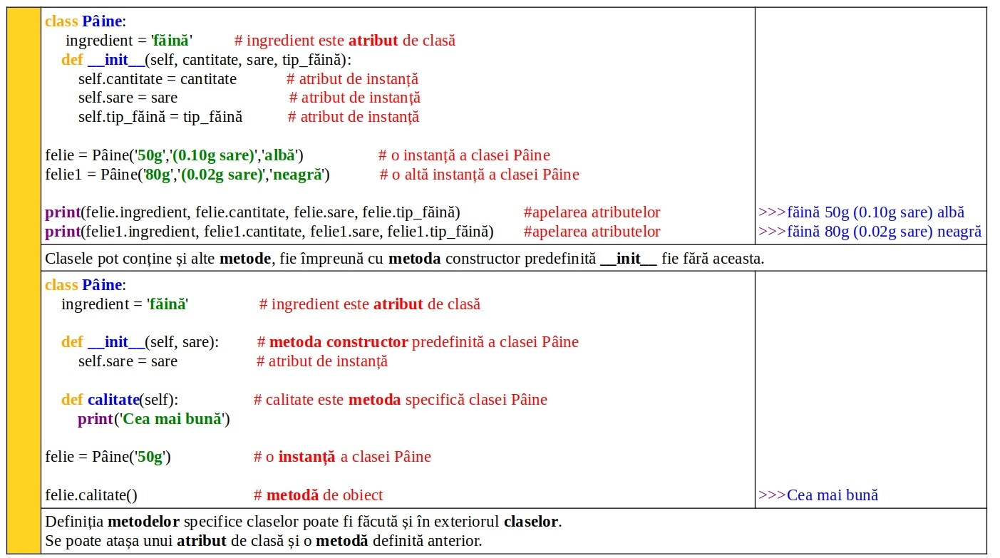
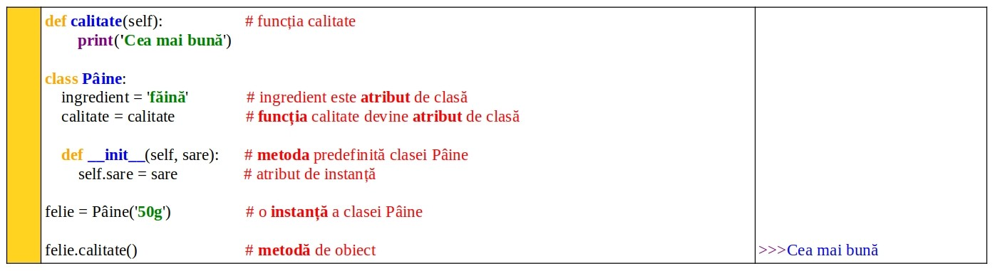

Obiecte clasă
Închide meniu
Acasă
Concepte de bază ∵
Elemente de limbaj
Lexicon, sintaxă & semantică
Cuvinte cheie
Obiecte încorporate
Funcții încorporate
Tipuri de date
Literali
Literal: şir
Literal: şir: metode implicite
Literal: numere
Literal: numere cu virgulă
Conversie tipuri de date(casting)
Operatori
Operatori binari
Operatori de apartenență
Declarația de atribuire
Legături de operatori
List / tuple / dictionary
list: literal şi operațiuni
tuple: literal şi operațiuni
dict: literal şi operațiuni
Încorporat detaliat
Date: metode predefinite text
Date: comparație text
ASCII
Cuvinte cheie ∵
and
or
not
as
assert
async
await
break
continue
class
def
del
if
elif
else
try
except
finally
for
from
False
True
global
nonlocal
import
in
is
lambda
None
pass
raise
return
yield
while
with
Controlul buclelor ∵
Declarații condiționale
Bucle: while, for, range (), in
Diferența semantică
break / continue / pass
Functii ∵
Funcție: definiție şi invocare
Funcție: aspecte cheie
Funcții: argumente multiple cu * şi **
Return şi Yield
None
Funcții recursive
Parametri vs argumente
Parametru implicit
Funcția list()
nelocal
Funcții: ordine ierarhică
Principii de proiectare a funcției
Funcții incluse
Functii predefinite ∵
abs()
any()
all()
ascii()
bin()
bool()
bytearray()
bytes()
callable()
chr()
ord()
compile()
classmethod()
staticmethod()
complex()
del()
dict()
dir()
divmod()
enumerate()
filter()
eval()
float()
format()
frozenset()
getattr()
hasattr()
setattr()
delattr()
globals()
exec()
help()
hex()
hash()
input()
id()
isinstance()
issubclass()
int()
iter()
list()
locals()
len()
max()
min()
map()
next()
memoryview()
object()
oct()
open()
pow()
print()
property()
range()
repr()
reversed()
round()
set()
slice()
sort()
sorted()
str()
sum()
tuple()
type()
vars()
zip()
__import__()
super()
Clase ∵
Clase -- concepte de bază
Spații de memorie şi scopul acestora
Sintaxă clasă în Python
Obiecte clasă
self
Încapsularea claselor
Metoda constructor __init__()
Metoda distructor __del__()
Obiecte de instanță
Metode aplicate obiectelor
Atribute de clasă şi de instanță
Atribute predefinite
Moştenirea claselor
Moştenire multiplă
Schimbare de nume
Polymorphismul claselor
Compunerea claselor
Clase cu iteratori
Clase cu generatori
Introspecția claselor
Reflexia claselor
Module ∵
Module
Aliasing
Funcția dir
Module predefinite: math
Module predefinite: random
Module predefinite: platform
Pachete
Erori si excepții ∵
Erori si excepții
Try & except
Try & except & else
Try & except & else & finally
Raise
Assert
Listă excepții
Fişiere externe ∵
Fişiere externe
Exemple ∵
Index masă corporală
Conversie unități măsură
Verificare triunghi
Teoremă Pitagora
Factorial
Fibonacci
Matrice
Buton
☰
❮
❯
VRU
⟢ Obiecte clasă
